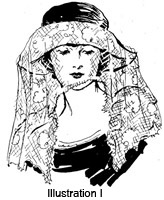
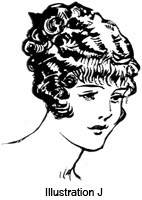

1928—The New-Way Course in Millinery and Hat Design
Lesson 16—Your Hat and You
Your Hat—and You
Almost anyone can learn to make a hat—but only when one can create hats that are individually becoming can one call oneself an expert milliner. The tall woman cannot wear the hat that the short woman wears. The hat that is charming on the woman with an oval face, has no charm whatever when worn by the round-faced woman. The lines of the hat must harmonize with the lines of the face to create an effect of harmony and charm.
When you make a hat for yourself, you cannot choose a style of frame indiscriminately—nor can you choose any type of trimming you please. You must first consider the lines of your face, the coloring of your face and hair—even your height. Certain rules of crown-height, brim-width and color should govern your ultimate choice. Are you tall? Then you must avoid certain styles that make you appear ungainly. Are you short? Then you must avoid certain styles that make you appear shorter. Are your features inclined to be angular? Then you must avoid certain styles that tend to make them appear sharp and unattractive.
Of course, experience is the best teacher—in hat-making as in everything else. By experimenting, you may find exactly the type of hat that is most suited to you, that is most becoming. But why experiment and waste time, and perhaps money, when we have collected for you those rules of individual line and color harmony which have been found most practical? Combine your own experiences with what you learn in this lesson—and you will have no difficulty in creating for yourself and for others hats that are as becoming as they are charming.
Of Interest to the Short Woman
No woman who is short wants to wear clothes or hats that make her appear shorter. If anything, she wants to appear taller. There are certain hats that detract from the height and should never be worn by the short woman.
The large, drooping brim, for instance, takes a great deal from the height of the wearer. It should never be worn by the short woman, or by anyone having round shoulders or a short neck (see Illustration A). The ideal hat for these people would be one with a narrow brim, a rather high crown, and perhaps one that is turned up slightly at the back.
The short woman should avoid brims that are very wide. A hat like Illustration B is becoming as it turns up and carries the eyes up instead of down. If one is of medium height, the sailor shape will be found becoming.
Of Interest to the Tall Woman
Sometimes the entire appearance of the tall woman is marred by the choice of a wrong type of hat. A hat that carries the eye up can create an ungainly, unattractive appearance.
When one is quite tall, the drooping brim is most becoming. Its width should be in keeping with the height—the wider the brim the more it will detract from the height. Glance at the illustrations. See how unbecoming the narrow-brimmed hat is to the tall woman. And see how becoming the drooping brim hat is. (See Illustration D.)
But it is not enough for the lines of the hat to follow the lines of the body—they must follow also and harmonize with the lines of the face.
Following the Lines of the Face
If you have a short, tip-tilted nose, you will do well to avoid a hat that turns up sharply from the face. This will tend to make your nose appear stubbed. If you are flat-featured, or if you have a full, round face, select a shape the front brim of which is wider than the sides. You will find that an all-round hat accentuates the flatness and tends to make the face appear more round.
On the other hand, if you have a thin, oval face, or if your features are angular, you should wear what is known as an "oval shape". It is less in diameter from side to side than from front to back. The full-faced woman will find that the hat with a high crown and narrow brim, or with a brim that turns up sharply against the crown or one side or all around, is becoming. The oval-faced woman will find the hat with a medium-wide brim which is wider in the front than in the back is most becoming.
It is wise to remember, though, that the becomingness of a hat depends largely upon the minor characteristics of the individual. Of course, there can be no rules for these characteristics. They conform to no definite qualifications. It is always best to study yourself in the mirror carefully, comparing the lines of the hat and of the face, until you have the perfect harmony. Be sure to make notes for future reference.
Color in Millinery
The importance of color in millinery cannot be overemphasized. It plays as important a part as line, decoration, even style. To be the true "crowning glory" which poets like to call it, the hat must be in perfect harmony—line, color and style enhancing each other, and the three together enhancing the appearance of the wearer.
Many people make the mistake of supposing that a color which is unbecoming when worn below the face must be unbecoming when worn above. As a matter of fact, this holds true very rarely. Black may be unattractive if you wear it in a blouse; but you may find a hat faced with black extremely flattering.
Here again, while many rules on color harmony can be given, it is always best to study the requirements of the individual for whom the hat is being made. There are exceptions to almost every rule, and while certain colors may be becoming to almost everyone else of a similar type, they may be unbecoming to you. It cannot be dogmatically said that red is becoming to all brunette women. It is becoming to almost all brunette women, but undoubtedly there are some who have found that red is not one of the colors they can wear.
Harmony Between Hat and Costume
When we speak of harmony, we do not mean harmony of line and color alone. We mean harmony between the hat, and the frock and wrap. We mean harmony between the hat and the season in which it is worn. We mean harmony in its fullest sense.
For instance, no matter how delightful the Spring hat might be, it would lose all its charm if worn in the Fall. Similarly, a hat may be smart, well-made and attractive—but if it is a dressy hat worn with a tailored suit the lack of harmony robs the complete costume of its beauty.
In an earlier lesson you were told which materials are appropriate for summer, and which for winter. If you have forgotten, now is the time to turn back and re-study that lesson once again until you are positive that you can choose a material for your new hat correctly.
It is always interesting to have the color of the hat harmonize with the season. For instance, if golden-brown is one of your becoming colors, be sure to include a hat of this color in your autumn wardrobe—for nature has endowed autumn with a golden-brown beauty of its own. In summer, select gay colors to harmonize with nature's gay mood—evident in the blues and greens and reds of the flowers.
There should be a very fine harmony between your hat and the clothes you wear. If you wear a flowered chiffon dress in the afternoon, wear a large drooping hat to carry out the scheme of smartness. When wearing a sport suit a chic sport hat should be worn., If you are dressed for the theater wear a dressier hat; it should harmonize in style and color with the frock and wrap worn.
Of course you know that the veil is in style and out. Some years Fashion decrees that the veil should be worn with various types of hats and it often adds a great deal to the appearance of the hat especially if it is well chosen with a regard for appropriateness and harmony. If the hat is embroidered and elaborate the plain mesh veil is chosen. However, if the hat is plain and not over decorated you may wisely use a veil patterned in an attractive design. The veil may be worn in many ways, according to the prevailing mode. Sometimes the veil looks best when hanging loosely as in Illustrations I and G. Sometimes it appears smarter and more becoming when draped around the brim as in Illustration H.
The Becoming Coiffure
Hair was intended as a frame for the face. For this reason it is important that you choose the coiffure that is most becoming to your features—the coiffure that conceals the less attractive features and enhances those that are attractive.
On this page are shown eight different ways to arrange the hair. If your face is long and thin, dress your hair flat at the top and puffed out slightly at the sides. If your face is full and round, allow the hair to fall softly at the sides and puff the least bit at the top.
It is impossible to give definite rules for the arranging of the coiffure. You must experiment until you find the just-right way to dress your hair, the most becoming way to frame the face. Always remember that the correct coiffure is the one that follows the line of the face most prettily.
Bobbed hair is becoming to most people, especially if care is taken as to the way it is cut. Follow the same rules given for dressing of long hair. If your face is full do not wear the hair fluffy at the sides. The boy bob is most becoming to young people or a person who has especially well-formed features.
Study the coiffures shown in the illustrations. Then study your face and features carefully in the mirror—and select the coiffure that is most becoming to you.
How Your Hat Reveals Your Personality
Someone once said that an author cannot write a book without revealing some secrets of his own life in it. It is just as true that a milliner cannot create a hat that does not tell to some extent what her tastes are, what her little secrets of personality are. All clothing is a sure index to personality—just as the table of contents is a sure index to what the book contains.
Did you know that the hat you wear reveals to strangers whether you are gay or dignified, careless or punctilious, gracious, generous or reckless? Did you know that people read in your clothes whether you are quiet and sombre, or inclined to be the least bit jolly? If you are melancholy, the dresses and hats you wear reveal it for everyone to know. If you are in love with life, eager to accomplish big things, thrilled with the possibility of achievement—your clothes tell about it in a language of their own.
You may never have realized it before. Unconsciously you select those colors and styles, those trimmings and materials, that are a true expression of yourself, your personality. That is why it is so very important to concentrate on the subjects of line harmony, correct trimmings, harmonious colorings. We do not want people to misjudge us, to misunderstand us.
With the mastery of harmony and style, and the final touch of personality added, there remains only the matter of correct workmanship before one becomes an expert in the art of hat-creating. And correct workmanship can come only through faithful study of the lessons in this course, and conscientious practice.
These, then, are the five determining factors in the artistic creation of hats—harmony, style, color, personality and workmanship. Each one plays a part of its own, but all are equally important. The five factors constitute the art of perfect millinery.